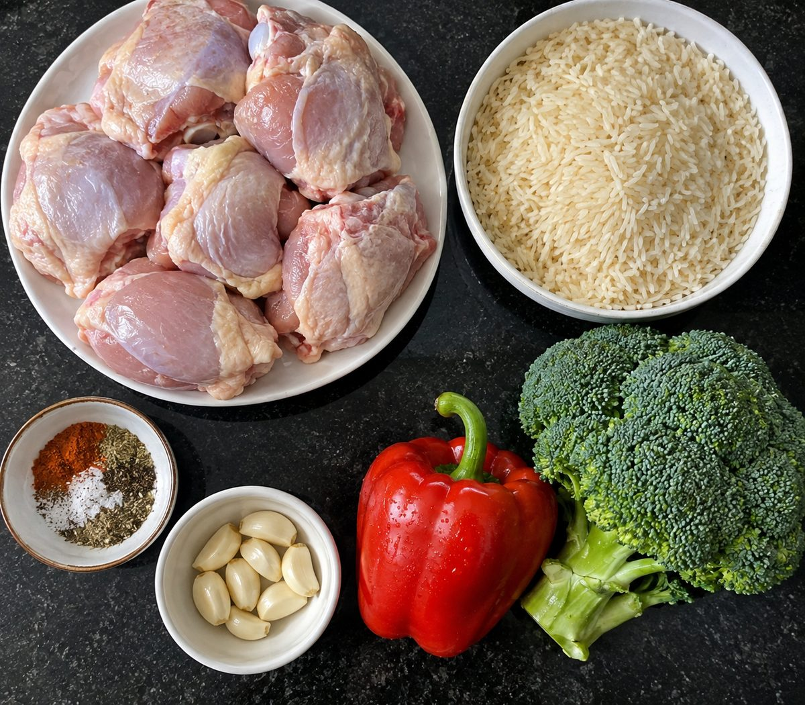
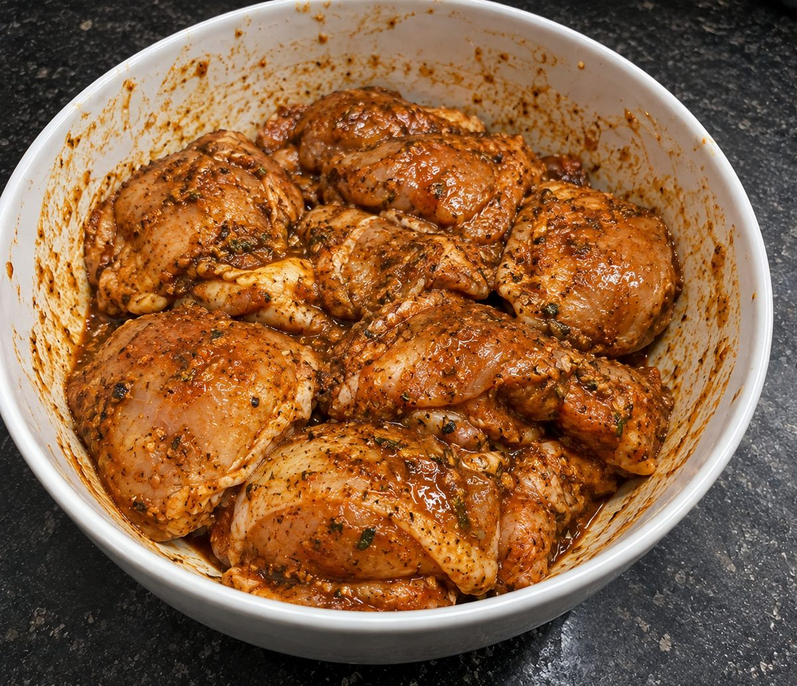
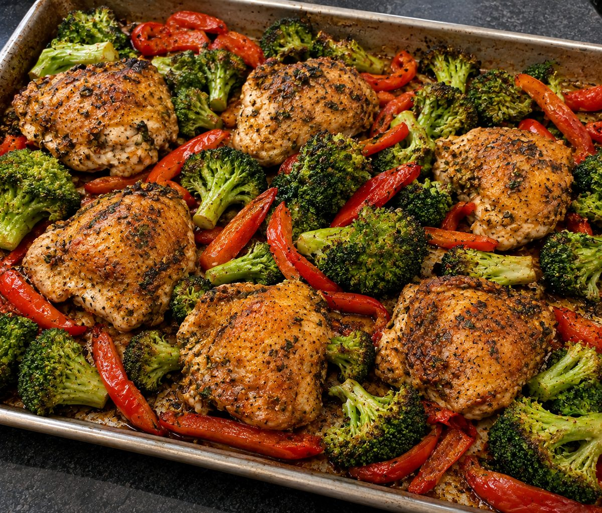
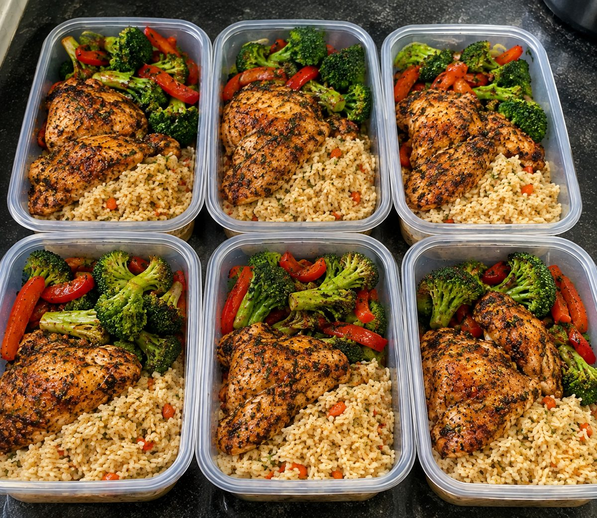
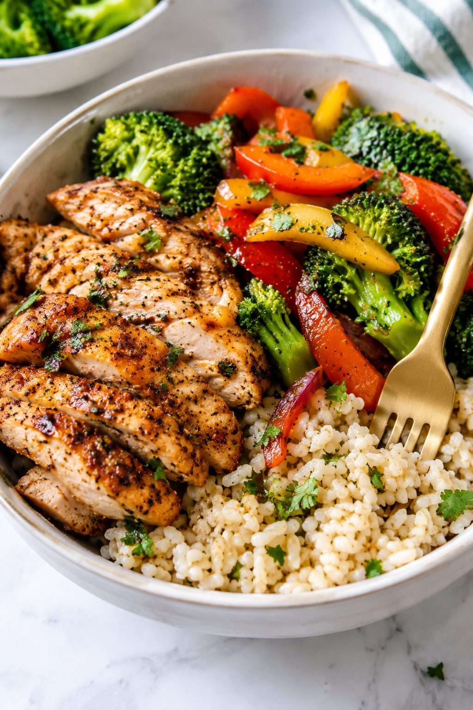

High-Protein Chicken & Rice Power Bowl
Estimated per serving: 1 chicken thigh with skin, plus one sixth of the rice and vegetables. Values come from standard nutrition database figures and vary with brands and thigh size.

This is the bowl that keeps Sunday meal prep short. Chicken thighs roast on one sheet pan with broccoli and red pepper while a pot of herbed carrot rice cooks on the stove. Twenty minutes of hands-on work gives you six lunches, with about 32g of protein in each.
Thighs are the right cut here. They have more fat than breasts, so they stay juicy through four days of reheating instead of turning dry and stringy. Leaving the skin on gives you a crisp, deeply seasoned finish from a simple paprika and herb rub, and there's no sauce to make.
Container tip: glass containers with vented lids reheat more evenly than plastic. If you can, pick ones with a divider so the rice doesn't soak up the vegetable juices.
Ingredients

- 6 bone-in, skin-on chicken thighs (about 2.5 lb / 1.1 kg)
- 1.5 cups / 280 g long-grain white rice, uncooked
- 1 large head of broccoli (about 14 oz / 400 g), cut into florets
- 2 bell peppers, red or a mix of red and yellow (just "peppers" in the UK), cut into strips (about 10 oz / 300 g)
- 1 medium carrot, finely diced (about 2 oz / 60 g)
- 5 cloves garlic, minced
- 2 tbsp / 30 ml olive oil, divided
- 1 tbsp paprika (smoked or sweet)
- 2 tsp dried mixed herbs, such as oregano or Italian seasoning
- 1 tsp ground black pepper
- 1.5 tsp salt, divided
- 1/4 cup / 15 g chopped fresh parsley or cilantro (coriander in the UK)
- 1/2 tsp cayenne pepper, optional for heat
Notes for UK and European cooks
- Oven: 425°F is 220°C, or 200°C in a fan oven (gas mark 7).
- Sheet pan: this is a large baking tray in the UK and Europe.
- Chicken: ask for "chicken thighs on the bone, skin on." They are usually the cheapest cut in bulk packs.
- Allergens: none of the ingredients are among the 14 major allergens listed in the EU, but check the labels on dried herb and spice blends.
- Budget tip: chicken thighs, rice and fresh vegetables are usually cheapest at discount supermarkets such as Aldi and Lidl.
Instructions
-
In a large bowl, mix 1.5 tbsp of the olive oil with the paprika, dried herbs, black pepper, garlic, 1 tsp of the salt and the cayenne if using. Add the chicken and turn it until every piece is well coated. Leave it for 15 minutes, or cover and refrigerate for up to 12 hours for deeper flavor.

Coat every piece well. The rub forms a paste that crisps up in the oven. - Preheat the oven to 425°F / 220°C (200°C fan). Place the chicken skin-side up on a large sheet pan (baking tray) and roast for 15 minutes.
-
Toss the broccoli and peppers with the remaining 1/2 tbsp oil and a pinch of salt. Tuck them around the chicken and roast for another 20 to 25 minutes, until the skin is crisp and the chicken reaches at least 165°F / 74°C with the juices running clear. Thighs taste best at 175 to 185°F / 80 to 85°C.

Give the pieces space on the pan so they roast instead of steam. - While the chicken roasts, rinse the rice until the water runs mostly clear. Cook it with the diced carrot, the remaining 1/2 tsp salt and 3 cups / 700 ml of water, covered, for about 15 minutes. Rest it covered for 5 minutes, fluff with a fork, and stir in the parsley.
- Let the chicken rest for 5 minutes. Divide the rice across 6 containers and top with a chicken thigh and the roasted vegetables.
-
Let the containers cool, uncovered, for 15 to 20 minutes before sealing, so steam doesn't make the rice soggy. Put the rice in the fridge within 1 hour.

Six lunches, ready for the week.
Storage and Reheating
- Fridge: up to 3 to 4 days in sealed containers at or below 40°F / 4°C (US guidance). Cooked rice is the exception in the UK. The NHS advises cooling it within 1 hour, keeping it in the fridge for no more than 1 day, and reheating it only once. If you are in the UK or prefer to be cautious, freeze the portions you will not eat the next day.
- Freezer: keeps for up to 2 months. Thaw overnight in the fridge before reheating.
- Reheat: microwave for 2 to 3 minutes with the lid vented and a splash of water over the rice, until piping hot all the way through. The skin softens in the fridge. To crisp it again, reheat the chicken in an oven or air fryer at 375°F / 190°C for about 10 minutes.
- Lighter option: remove the skin before eating to save roughly 60 kcal and 6g of fat per serving.
